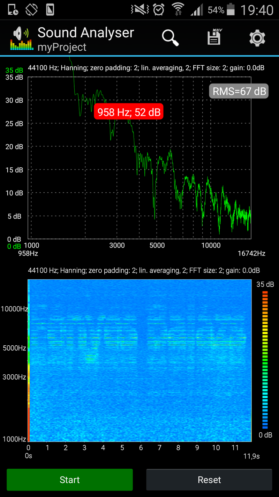

The main idea is that, as the screen refreshes, there is a capacitor (or more of them) inside the screen, which charges/discharges depending on the color of currently drawn pixel. Due to the structure of this (surface mount) capacitor, it will slightly change shape depending on the applied voltage. This shape change is amplified through the circuit board onto which it is soldered. It is easy to see, that this resembles a speaker, where the circuit board acts as the membrane of the speaker.
The screen draws the image as many horizontal lines. I will change the brightness (between black and white) of these lines, to create the sound waveform. The human hearing ranges from 20 Hz to 20 kHz, but I could only create sound with this method above 2 kHz. There are also numerous noise sources (for example: computer fans) at lower frequencies. I got the best results between 5 kHz to 10 kHz.
Imagine a common 1920×1080 pixel 60 Hz display panel, and I want to create a 10 kHz sine wave sound as an output. Let's calculate the width of this sine wave: $\frac{1}{10000~Hz}\cdot 60~Hz\cdot 1080~px\approx 6.5~px$. (This means that we start from black, then go to white after 3.25 lines, then go to black after 3.25 lines.) I would violate the sampling theorem when the result were less than 2 pixels, but fortunately this is not the case here.
We will transmit the following image:
The x (horizontal) axis represents time, the y (vertical) axis represents the logarithm of frequency, the grayscale pixels gives the intesity of that frequency component at that time. The bottom is 1 kHz, the top is 12 kHz. The code sums all the possible sine waves (40 different frequency components for that image) and weighs them according the pixel's brightness. After a normalization and amplification step, the code draws on the screen line by line. After some time, the code processes the next column of the input image.
This video shows the what the program draws on the screen:
The resulting whistling sound is noticable, but quiet. I used a sound analyzer application on my phone to reconstruct the original image. This application calculates the Fourier-transform of the waveform from the microphone of the phone. I could only get good results, when I put the microphone of the phone directly in front of the screen.
